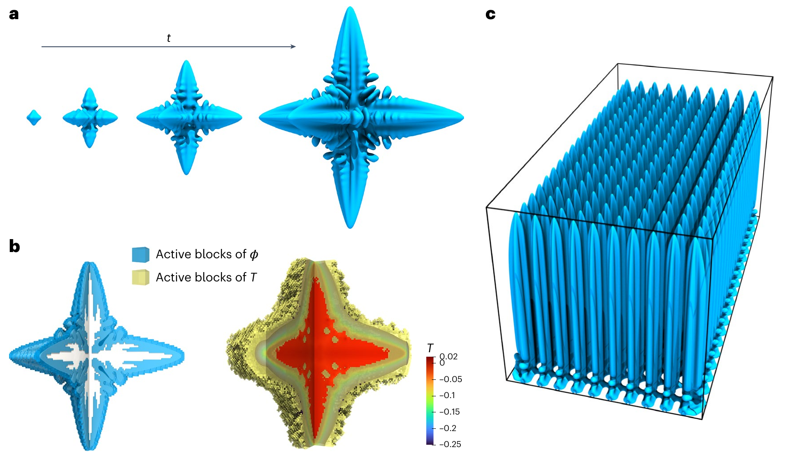
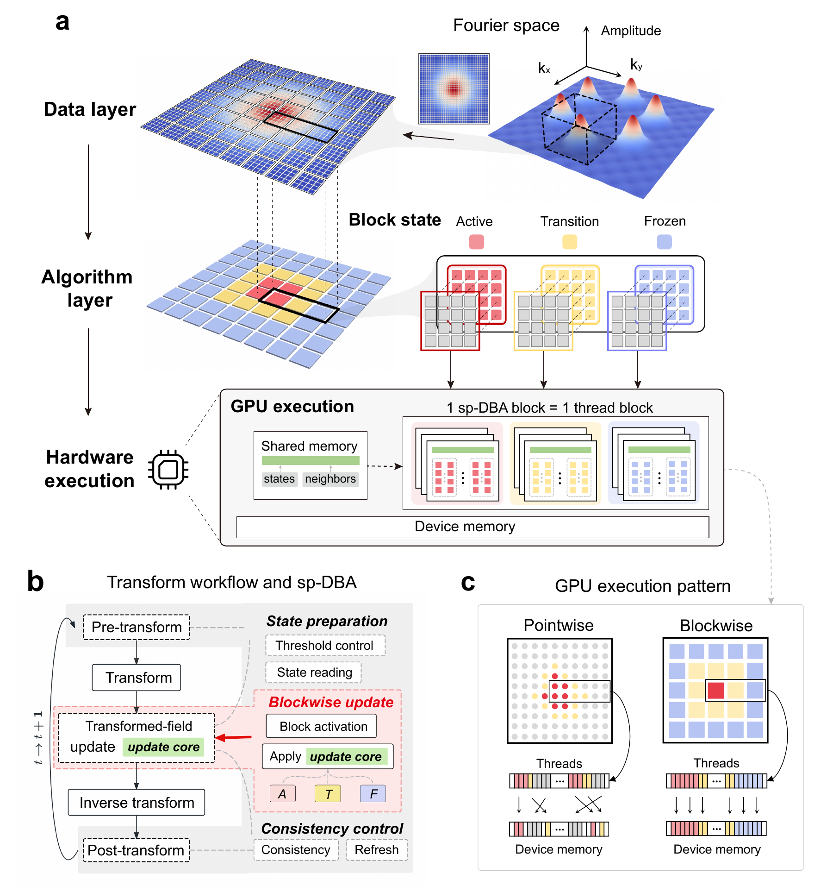
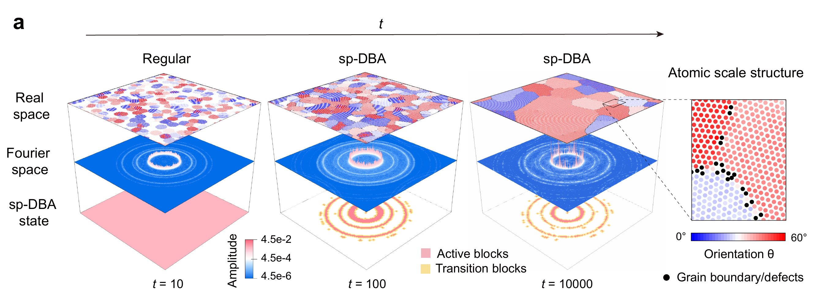
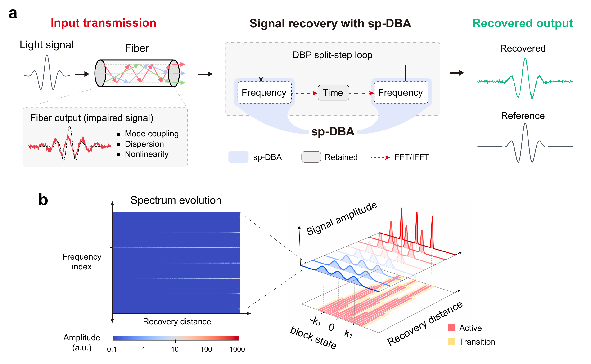
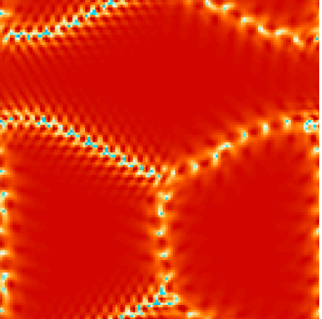
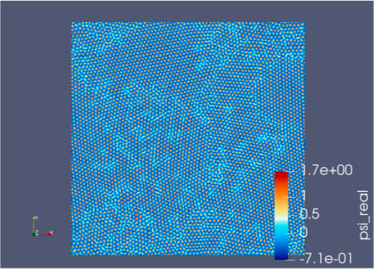

Research
I work on scientific computing and high-performance computing for large-scale physical simulations. I started with C++ phase-field and phase-field crystal solvers for dendritic growth and grain evolution, then moved to GPU acceleration, distributed FFTs, and adaptive Fourier-domain computation. I also develop tools that turn simulated density fields into information about defects, grain boundaries, and grain statistics.
DBA · Prior work
A growing crystal changes most near its solid–liquid interface. Dynamic block activation (DBA), developed by Ruoyao Zhang and Yang Xia, concentrates computation around such evolving regions. Its blocks match GPU execution, with activation states held in shared memory. Overlapping communication with computation enabled near-ideal scaling to 32 GPUs in the paper’s dendritic-growth tests. This real-space approach is the starting point for sp-DBA.


sp-DBA
Fourier pseudo-spectral solvers use fast Fourier transforms (FFTs) to move between real space and Fourier space. DBA’s local activation rules cannot be transferred directly, because each Fourier mode describes structure across the whole domain. I led the design and implementation of sp-DBA with my advisor, Prof. Yang Xia, to bring adaptive computation into these established workflows.
The framework selects which blocks of the transformed field need updating as a simulation evolves. It follows GPU blockwise execution, works alongside optimized transforms, preserves existing equations and numerical methods, and needs only limited solver-specific changes. We demonstrated it in phase-field crystal (PFC) models of materials, reaction–cross-diffusion (RCD) models of biological patterns, and digital backpropagation (DBP) for optical communications.
Jingkun Jiang, Pingchuan Deng, and Yang Xia. sp-DBA: a general framework for adaptive transform-domain computation. Preprint (2026).


Phase-field crystal (PFC)
Materials science · Polycrystalline coarsening
PFC models follow crystal ordering through a continuous density field that resolves the atomic lattice. Their high-order spatial terms and periodic structure suit Fourier pseudo-spectral methods. In this structural PFC (XPFC) example, strong Fourier amplitudes cluster in narrow rings set by the lattice spacing. sp-DBA focuses updates around these bands as grains evolve.


Reaction–cross-diffusion (RCD)
Biological pattern formation
RCD models describe interacting components whose reactions and coupled diffusion produce patterns. sp-DBA concentrates updates in the relevant Fourier bands; the image shows an eight-component example. In a separate 48-component benchmark, sp-DBA with eigendecomposition achieved up to 28.1× update-stage speedup over direct-matrix Regular.

Digital backpropagation (DBP)
Optical communications
DBP aims to recover optical signals by numerically reversing their propagation through a fiber. In our controlled Gaussian-wave-packet tests, sp-DBA concentrates linear updates in the occupied frequency bands, while retaining nonlinear steps and FFT/IFFT operations. Overall speedup reached 8.4× over full-update Regular.


FFT implementations
I started by writing a Cooley–Tukey FFT library and comparing it with FFTW. Later, I implemented slab-decomposed FFTs for PFC across multiple GPUs, combining local cuFFT transforms with MPI redistribution. Both projects helped me work through the links between numerical algorithms, memory layout, and communication.

Computational Materials
Grain boundaries & defects
Phase-field crystal (PFC) · From density fields to grain statistics
PFC resolves a crystal’s periodic density, so defects and grain boundaries emerge in the same field. I built Fourier-based CPU/GPU solvers and used polycrystals and a small-angle circular boundary to inspect how these structures evolve.
To connect those fields to grain statistics, I extract density peaks and compute in-plane orientations in C++/CUDA, then export particle data for inspection in OVITO. My Python code segments grains under periodic boundaries and measures their areas and size distributions.

Amplitude phase-field crystal (APFC)
APFC represents a crystal density through complex amplitudes. I built two-dimensional solvers in C++/FFTW and CUDA/cuFFT, evolved three amplitudes, and reconstructed the density. Rotated seeds, smooth amplitude transitions, and phase-consistent initialization were practical parts of this work; I inspected density, combined-amplitude, phase, and phase-gradient diagnostics together.


Structural phase-field crystal (XPFC)
Structural PFC (XPFC) uses a correlation kernel to favor selected crystal structures. I implemented solvers and compared lattice choices and model parameters in real and Fourier space. These paired views helped me check how the model and initialization shaped the developing patterns.


Phase-field (PF) modeling
Three-dimensional dendritic growth
Phase-field models follow a moving solid–liquid boundary through continuous fields. I built a three-dimensional solver coupling phase and temperature, using finite differences, and developed CPU/OpenMP, MPI, and CUDA versions. The comparison below shows how the labeled anisotropy settings affect the developing dendritic morphology.